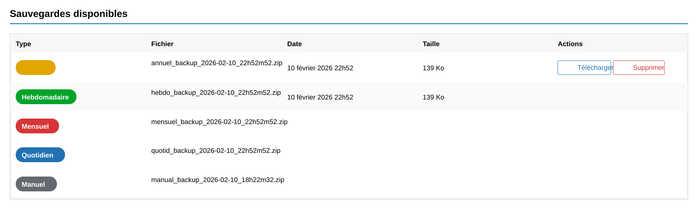
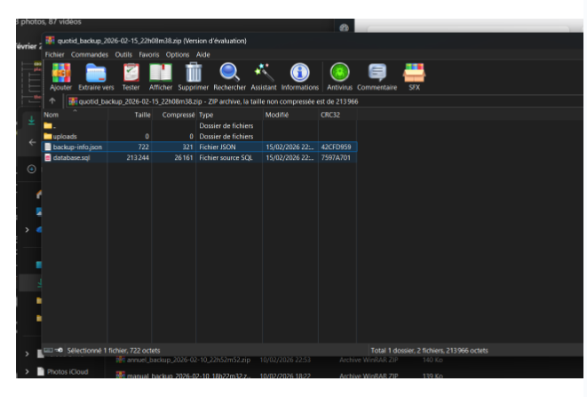

CoolBackup8 - Gérer le patrimoine informatique
Stage 2ème année - Plugin WordPressLa protection des données du site WordPress a été un point important de mon stage. Pour y répondre, CoolBackup8 permet de sauvegarder les fichiers, la base de données et les archives nécessaires afin de conserver une copie exploitable du site.
- création d'archives contenant les fichiers et la base,
- inventaire des sauvegardes disponibles,
- consultation du détail technique d'une sauvegarde,
- planification des sauvegardes automatiques,
- lancement de sauvegardes manuelles,
- suivi de la taille et de la conservation des données.




Gestion des sauvegardesArchives ZIPBase de donnéesTraçabilitéConservation